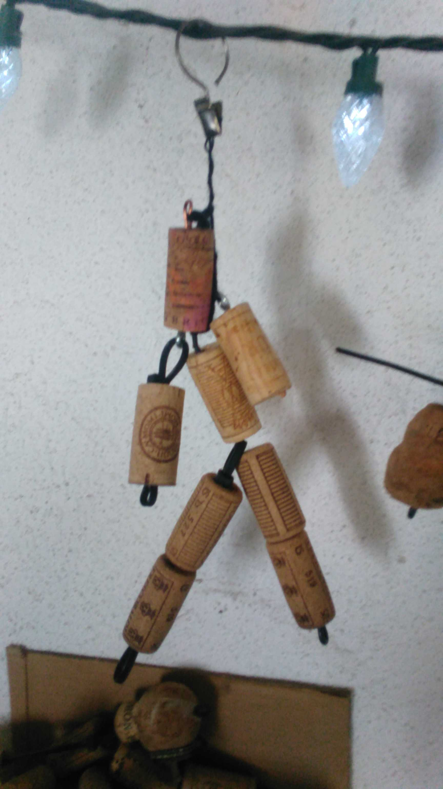

Zorkas.com
Purpose: Zorkas are small fetish figures that are made from wine corks. The purpose of Zorkas.com is to
provide an online storefront while providing a medium to spread the myth
and create a sense of collector community around these unique up-cycled fetish dolls.
Target Audience Stats and Persona
- Name: Shawn Eileen Pat
- Age: 40-70 yrs old
- Sex: Female/male
- Location: USA
- Income: 35,000K-60,000K
- Education: Some College
- Job Title: Working parent/retired
- Marital Status: married/divorced/single
- Children: 2+
- Archetype: Collector
- Attributes: Creative, Social
|
Persona: Shawn is happy-go-lucky and enjoys the small funky things in life
Her mantra is, "Love the things that are tragically beautiful and beautifully tragic."
In here eyes form always out weighs the value of function. Because of this here home and
personal spaces are always decorated with small meaningful items. At the root of it she
just loves collecting. In here efforts to acquire new items she relies on the hands-on approach
and frequents garage/yard sales, flea markets, and knick-knack shops. Because she often does not
know what she is looking for she prefers a general browsing approach and the social reward
of face to face contact. After all friends where just strangers at one time.
Technology in Shawn's life: Although she is an avid email user, she rarely uses the internet for
other purposes due to how impersonal and voyeuristic it makes her feel. She only has a flip-phone
and an old I-Mac single unit computer.
Challenge: Create a super 'simple' website that allows users to interact with the Zorka myth and narrative
while agitating the desire to collect, share, and create stories as unique as each Zorka.